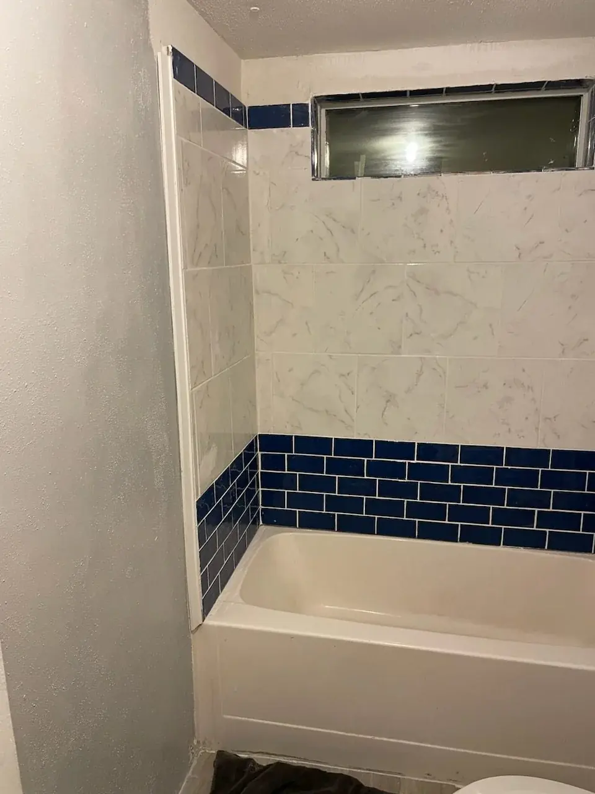

Drywall repair near me
Holes, cracks, ceiling patches, and texture blending after leaks or fixture changes across Pinellas County homes.
Drywall repair near me
Holes, cracks, ceiling patches, and texture blending after leaks or fixture changes across Pinellas County homes.
Drywall conditions we rebuild routinely

From golf-ball-size holes to full sheet sections after plumbing access, drywall work is only as good as the backing, tape, and texture that follow.
- Impact holes at door swings and hallway corners
- Ceiling patches after fan swaps and recessed can upgrades
- Stress cracks at stair stringers and truss uplift lines
- Water-stained areas once sources are verified dry
- Garage fire-separation patches for door swaps
- Rental unit refreshes between tenants with photo documentation
- Skim coats over dated orange peel before modern paint
- Backer installation behind heavy tile or grab bar loads
Texture and paint handoff
We communicate sheen and color expectations before texture dries differently than surrounding areas. When paint is included, stain block primer goes on water marks before topcoat — skipping that step shows through within months in humid baths.
Drywall repair near me — patches that disappear in paint

Drywall repair near me searches spike after doorknob impacts, outlet relocations, AC leaks, and bathroom fan swaps. Knight Group patches holes, cracks, and ceiling damage across Safety Harbor, Clearwater, and Pinellas County with texture blending so repairs do not telegraph as obvious squares.
Drywall damage we fix regularly
- Doorknob holes and medium patches with backer and tape
- Ceiling cracks at truss lift lines and around recessed cans
- Water stains after minor leaks — substrate dried before mud work
- Texture matching: orange peel, knockdown, and skip-trowel where feasible
- Garage and laundry patches before listing or tenant move-in
Prep sequence that makes paint look professional

We feather edges, apply appropriate compound coats, sand between stages, and prime stains before topcoat. Skipping any step shows up under raking light — especially on Florida ceilings with strong sun angles.
Combine with paint and plumbing closeout
If a leak caused the damage, plumbing should be stable before final texture. Browse hole in wall repair, texture matching, and drywall and paint repair for related scopes.
Drywall repair demand across coastal humidity

Pinellas ceilings crack at truss lines; coastal stucco homes transfer movement to interior corners. Knight Group patches with humidity-aware compound schedules so mud cures before texture and paint.
Seminole and Largo rentals often need multiple patches documented — send unit numbers and photo sets for batch quotes along our routes.
Get a drywall repair quote
Place a tape measure in patch photos for scale. Ceiling work should note fan or can light locations nearby — we stage ladders and dust control based on that layout.
Frequently asked questions
Common questions homeowners ask before booking this type of work in Pinellas County.
How much does drywall repair near me cost?
Cost varies by hole size, ceiling vs. wall, and texture matching needs. Photos through our booking form help us quote accurately.
Do you match orange peel and knockdown texture?
Yes — we blend common Florida textures where feasible. Severely damaged large ceilings may need broader respray approaches quoted separately.
Can you repair drywall after a plumbing leak?
Yes once the leak is fixed and areas have dried appropriately. We remove unsound material before patching.
Do you repair ceiling drywall?
Yes — fan openings, small leak stains, and crack repairs are regular ceiling scopes.
How long until I can paint after a patch?
Timing depends on compound coats and humidity. We advise on dry times and can handle paint if included in scope.
Do you serve Dunedin and Palm Harbor for drywall?
Yes — Pinellas County coverage includes Dunedin, Palm Harbor, Safety Harbor, Clearwater, and nearby cities.


Ready to schedule?
Tell us what needs attention and where the property is located.